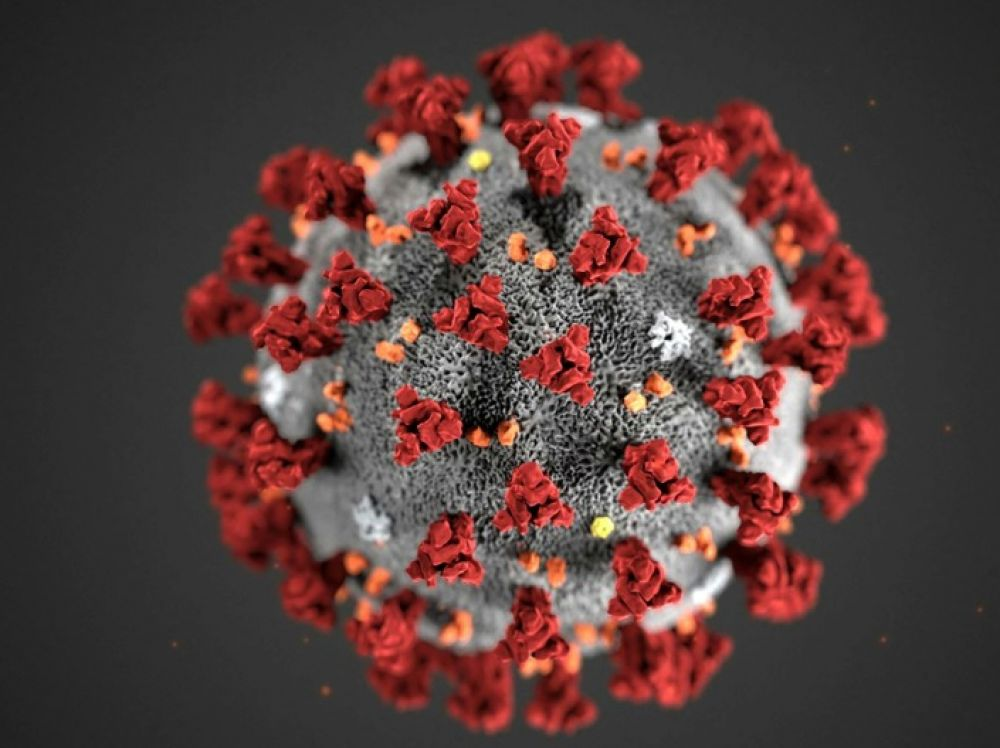

Comprendre le Covid-19

L'ORIGINE DU VIRUS
Le COVID-19, un nouveau coronavirus
Le virus identifié en janvier 2020 en Chine est un nouveau coronavirus, nommé SARS-CoV-2. La maladie provoquée par ce coronavirus a été nommée COVID-19 par l’Organisation mondiale de la Santé - OMS. Depuis le 11 mars 2020, l’OMS qualifie la situation mondiale du COVID-19 de pandémie ; c’est-à-dire que l’épidémie est désormais mondiale.
Les coronavirus sont une famille de virus qui provoquent des maladies allant d’un simple rhume (certains virus saisonniers sont des coronavirus) à des pathologies plus sévères (comme les détresses respiratoires du MERS, du SRAS ou du COVID-19).
Le COVID-19 est dangereux pour les raisons suivantes :
il est très contagieux : chaque personne infectée va contaminer au moins 3 personnes en l'absence de mesures de protection ;
une personne contaminée mais qui ne ressent pas encore de symptômes peut contaminer d’autres personnes.
Les symptômes
Le COVID-19 peut se manifester par :
- la fièvre ou la sensation de fièvre (frissons, chaud-froid) ;
la toux ;
- des maux de tête, courbatures, une fatigue inhabituelle ;
une perte brutale de l’odorat (sans obstruction nasale), une disparition totale du goût, ou une diarrhée ;
- dans les formes plus graves : difficultés respiratoires pouvant mener jusqu’à une hospitalisation en réanimation voire au décès.
La transmission
La maladie se transmet par ce qu’on appelle les gouttelettes : il s’agit de sécrétions invisibles qui sont projetées lors d’une discussion, d’éternuements ou en toussant. Les postillons correspondent aux gouttelettes visibles, mais la plupart des gouttelettes ne le sont pas.
La maladie se transmet par ce qu’on appelle les gouttelettes : il s’agit de sécrétions invisibles qui sont projetées lors d’une discussion, d’éternuements ou en toussant. Les postillons correspondent aux gouttelettes visibles, mais la plupart des gouttelettes ne le sont pas.
Le contact avec des mains non lavées ou des surfaces souillées par des gouttelettes est également à risque de contamination.
La maladie se transmet :
- par projection de gouttelettes (comme les postillons) contaminées par une personne porteuse : en toussant, éternuant ou en cas de contacts étroits en l’absence de mesures de protection (distance physique, mesures barrières, port du masque). Les gouttelettes contaminées sont inhalées par la personne saine, et déclenchent la maladie
- par contact direct physique (poignée de main, accolade, bise...) entre une personne porteuse et une personne saine. Le virus est ensuite transmis à la personne saine quand elle porte ses mains à la bouche.
- par contact indirect, via des objets ou surfaces contaminées par une personne porteuse. Le virus est ensuite transmis à une personne saine qui manipule ces objets, quand elle porte ses mains à la bouche.
La meilleure des protections : les mesures barrières et les mesures de distanciation physique.
Luttons ensemble contre le Covid-19
En l’absence de traitement, la meilleure des protections pour vous et pour vos proches est, en permanence, le respect des mesures barrières et de la distanciation physique. En complément, portez un masque quand la distance d’un mètre ne peut pas être respectée.
Restez chez vous
Face à la propagation du coronavirus, le mot d'ordre est clair: «restez chez vous!», a exigé le ministre de l'Intérieur. Concrètement, toutes les personnes qui circuleront devront être en mesure de justifier leur déplacement. Les déplacements tolérés sont ceux entre domicile et travail quand c'est absolument nécessaire, pour aller faire ses courses, pour raison de santé ou encore pour motif familial impérieux ou l'assistance de personnes vulnérables. Des déplacements brefs à proximité du domicile seront également tolérés. Les citoyens pourront toujours pratiquer une activité physique ou sortir son chien mais chacun devra le faire avec parcimonie. Des contrôles fixes et aléatoires seront opérés aussi sur les réseaux de transport.
Coronavirus : le confinement modifie le mouvement de la terre
Dans le monde entier, les rues des villes sont vides car les gens restent à l'intérieur en raison du verrouillage des coronavirus.
Tant de gens restent chez eux que la Terre tremble moins
Des milliards de personnes dans le monde entier restent chez elles à cause de la pandémie de coronavirus.
Le nombre de confinés est tellement important qu'en en fait cela change la façon dont la Terre se déplace.
En raison du confinement, il y a moins de déplacements pour le travail ou les loisirs sur les routes ou par rail, et de nombreuses industries lourdes ont fermé boutique.
En fait, nous sommes si nombreux à en faire moins de mouvement que cela a réduit les vibrations de la croûte terrestre.
C'est assez étonnant si l'on considère que notre planète pèse six milliards de billions de tonnes.
Des chutes spectaculaires
Les scientifiques de l'Observatoire royal de Belgique ont été les premiers à remarquer la baisse, en disant que "les mouvements du sol à des fréquences de 1-20 Hz [plus profondes que le son d'une contrebasse, semblable à un grand orgue] sont beaucoup plus faibles depuis la mise en place des mesures de confinement par le gouvernement".
Les changements ont été remarqués dans d'autres endroits du monde également.
Des sismologues au Népal ont constaté une baisse d'activité, un ouvrier de l'Institut de physique de la Terre de Paris a déclaré que la réduction dans la capitale française était "spectaculaire", et une recherche de l'université Cal Tech aux États-Unis a décrit la baisse à Los Angeles comme "sérieusement sauvage".
La chute spectaculaire de l'activité sismique au Népal peut être observée dans ce graphique.
Un air plus pur, des mers plus calmes
Ce n'est pas la seule façon dont le coronavirus - en affectant notre mode de vie - change le monde naturel.
Les satellites ont détecté une diminution du dioxyde d'azote, gaz polluant émis par les voitures, les camions, les bus et les centrales électriques.
Les épidémies de coronavirus sur plusieurs navires de croisière signifient que presque toute la flotte mondiale est désormais à quai, ce qui rend les océans sensiblement plus calmes.
Le monde est aussi plus calme.
Les scientifiques qui mesurent uniquement le bruit de fond quotidien de nos villes et ceux qui étudient la profondeur des océans ont constaté une baisse des niveaux sonores.
Des signaux plus clairs
Les nouvelles recherches sismologiques ne signifient pas que la Terre a complètement cessé de trembler, mais la différence n'est pas seulement perceptible pour les scientifiques - elle est aussi utile.
L'activité humaine est comme un bruit de fond qui rend plus difficile l'écoute de ce que la Terre fait naturellement.
La croûte terrestre peut avoir jusqu'à 70 km d'épaisseur, mais elle tremble toujours à cause de ce que nous faisons.
"Vous obtiendrez un signal avec moins de bruit au sommet, ce qui vous permettra d'extraire un peu plus d'informations de ces événements", explique le sismologue Andy Frassetto sur le site web des Incorporated Research Institutions for Seismology à Washington.
Certains chercheurs ont même réussi à déterminer avec précision la cause de la baisse dans leur région.
Stephen Hicks, qui travaille à l'Imperial College de Londres, attribue cette baisse à la diminution du trafic sur la M4 - une autoroute qui relie Londres au Pays de Galles.
"Il semble assez clair que ces derniers jours, l'augmentation du niveau de bruit à l'aube est beaucoup moins forte que ces dernières semaines", a-t-il écrit sur Twitter.
Je suppose que cela est dû à une heure de pointe matinale beaucoup plus faible - moins de gens qui font la navette et pas de course d'école".
Changements saisonniers
Ces changements ne sont pas sans précédent.
Comme on peut s'y attendre, l'activité humaine varie normalement au cours de chaque jour et de chaque année, car les gens sont moins actifs à certaines périodes.
La nuit est plus calme que le jour et les baisses ont lieu aux alentours des grandes fêtes et festivals.
Mais ce qui se passe dans le monde entier est une réduction de l'activité qui dure des semaines, voire des mois, et qui n'est normalement observée que brièvement à Noël dans les pays chrétiens.
Coronavirus : El Otmani salue l’élan de solidarité remarquable des Marocains
Le Chef du gouvernement, Saad Dine El Otmani a salué, jeudi à Rabat, l’élan de solidarité remarquable au Maroc face à l’épidémie de coronavirus, se félicitant de la pleine adhésion de l’ensemble des composantes du peuple marocain à l’initiative du Roi Mohammed VI de créer un Fonds spécial pour la gestion de cette pandémie.
Lors du conseil de gouvernement, ce jeudi 19 mars, Saad Dine El Otmani a relevé « l’interaction du peuple marocain, toutes composantes et positions de responsabilité confondues avec l’Initiative Royale et l’élan de solidarité remarquable des Marocains de l’intérieur et de l’étranger, pour contribuer au fonds dès l’annonce de sa création », estimant que cette adhésion exceptionnelle reflète l’essence et les nobles valeurs du peuple marocain.
D’autre part, le Chef du gouvernement a souligné la nécessité de continuer à respecter les mesures de précaution annoncées au Maroc. « Ce sont des mesures importantes et nécessaires pour éviter le danger et assurer la santé de tous », a-t-il dit, appelant les citoyens à ne quitter leur domicile qu’en cas de nécessité ou pour un besoin urgent comme un traitement médical ou l’achat de médicaments, « car bien que notre pays en soit au premier stade épidémiologique, a-t-il expliqué, il n’est pas possible de prédire ce qui va se passer dans les jours et les semaines à venir ».
A cet égard, Saad Dine El Otmani a insisté sur la nécessité de se conformer aux mesures de précaution car « plus le comportement des citoyens est à la hauteur, plus rapide la bataille sera gagnée contre l’épidémie et son confinement dans la prochaine étape sera facile, mais en cas de violation, comme autoriser les contacts, voyager, sortir et errer dans les rues, cela mettra tout le monde en danger ».
Saad Dine El Otmani a mis en garde à cet égard contre tout laxisme dans la circulation et la mobilité des citoyens, et a appelé à respecter les avertissements contenus dans le dernier communiqué conjoint du ministère de l’Intérieur et de la Santé, soulignant que « le danger ne porte pas sur une personne, une famille ou un quartier résidentiel, mais il aura un impact négatif sur tout le monde tant que le virus se propage rapidement ».
Il a également évoqué les précautions qui doivent être respectées par tout un chacun, telles que se laver les mains régulièrement, nettoyer les chaises, les tables et les poignées de porte et de fenêtre, car elles peuvent être un vecteur de transmission du virus de même qu’il faudrait se maintenir à l’écart de toute personne qui tousse ou atteinte d’un rhume ou qui souffre d’une température élevée, et garder une distance avec les autres pour éviter la transmission.
D’autre part, le Chef du gouvernement a salué les professionnels de la santé, de la sûreté et de l’administration qui continuent de travailler dans une telle situation difficile, et rendu également hommage aux commerçants et vendeurs soucieux d’assurer quotidiennement aux citoyens les produits de consommation nécessaires, tout en exhortant l’ensemble des citoyens à se mobiliser afin de surmonter cette épreuve en toute sécurité.
Fonds Corona: Un compte ouvert à Bank Al-maghrib pour collecter les dons
Un compte bancaire a été ouvert à Bank Al-maghrib pour collecter les dons au profit du fonds spécial pour la gestion de la pandémie du Coronavirus « Covid-19 » », indique le ministère de l’Economie, des finances et de la réforme de l’administration.
Le pays a en effet connu un élan de solidarité extraordinaire pour contribuer à la lutte contre la pandémie du coronavirus. Entre organismes publics et privés, salariés et hauts fonctionnaires, la somme de 10 milliards de dirhams dont a été doté ce fonds, créé sur instruction royale, a vite été dépassée.
Pour recueillir davantage de dons, de personnes physiques ou morales, souhaitant contribuer à cet effort national, le compte RIB : 001 810 00 780 002 011 062 02 21, a été spécialement ouvert à BANK AL-MAGHRIB/RABAT, au nom du Trésorier Ministériel auprès du Ministère de l’Economie, des Finances et de la Réforme de l’Administration.
Les versements des dons peuvent être effectués aussi auprès des comptables publics relevant de la Trésorerie Générale du Royaume exerçant au niveau national (Trésoriers Ministériels, Trésoriers Régionaux, Trésoriers préfectoraux et provinciaux et percepteurs) ainsi qu’au niveau des agents comptables auprès des missions diplomatiques et consulaires du Maroc à l’étranger, à charge pour ces différents comptables d’en transférer les sommes ainsi perçues, au Trésorier Ministériel auprès du Ministère de l’Economie des Finances et de la Réforme de l’Administration en sa qualité de comptable assignataire dudit compte.
CORONAVIRUS: CES INITIATIVES QUI FONT DU MAROC UN SEUL HOMME CONTRE L'ÉPIDÉMIE
Dans sa livraison du vendredi 3 avril, le journal Al Akhbar s’est intéressé aux mouvements de solidarité spontanés qui émerge à l’échelle du pays, porté par un milieu associatif actif, en ces temps de coronavirus. Plusieurs initiatives, ici et là, ont vu le jour au Maroc pour tenter de résister tant bien que mal à la progression du Covid-19 qui a pris ces derniers jours des propensions inédites.
La contribution de chacune des parties prend moult formes. Du côté des jeunes, un mouvement d’une ampleur nationale puise ses ressources dans un vivier inépuisable d’idées. Endossées par de jeunes ingénieurs créatifs, elles s’attaquent aux difficultés d’approvisionnement en terme de matériel médical. De nombreux jeunes bénévoles à Tanger, Rabat, Casablanca, El Jadida et Marrakech, ont employé leur savoir-faire pour fabriquer des masques de protection transparents en plastique moyennant des techniques simples, distribués gracieusement par la suite auprès des hôpitaux. Un geste très apprécié par le personnel médical et salué par les internautes sur les réseaux sociaux.